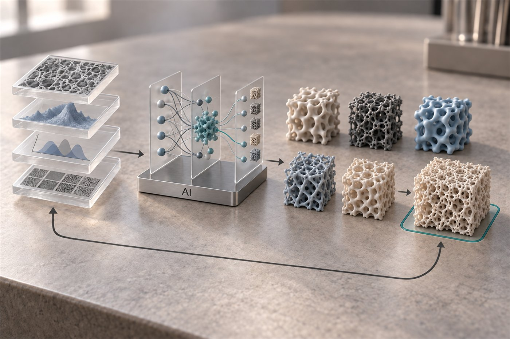

01 · DESIGN
AI-guided materials designAI 기반 소재 설계

Machine-learning models trained on synthesis conditions, structure and measured performance propose the next candidates. Foundation machine-learning interatomic potentials screen catalyst surfaces before anything is made; potential-resolved microkinetic models map selectivity; active learning decides which experiment is worth running. Large-language-model literature mining builds datasets where none exist yet, with every extracted number traced back to its source.
The goal is not a model for its own sake but a shorter path from a question to a material in hand.
- Machine-learning interatomic potentials
- Computational hydrogen electrode · NEB
- Microkinetic modelling
- Active learning
- Literature mining